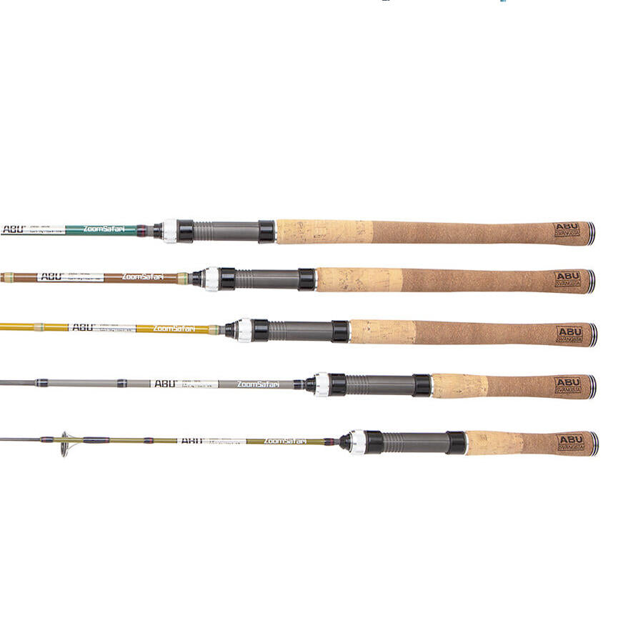
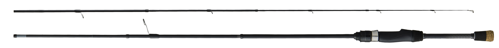

ズームサファリ
（ZoomSafari）
ズームサファリは、アブガルシアのマルチピースロッドです。
「近くの海釣り公園、管理釣り場、池や川、キャンプに持って釣りしよう！」がコンセプト。海・川・池・湖のどこでも、エサ釣りでもルアー釣りでも、場所・魚種・釣り方を問わず、大人から子どもまでみんなで楽しく釣れる「カッコよくて、カワイイ」なんでもロッドです。

画像出典:アブガルシア公式HP
スペック
- メーカー
- Abu Garcia（アブガルシア）／ピュア・フィッシング・ジャパン
- タイプ
- マルチピースロッド（スピニング5機種・ベイト4機種）
- 長さ
- 4ft〜8ft（スピニング）／4ft6in〜7ft6in（ベイト）
- 継数
- 4〜5ピース（スピゴットジョイント）
- 仕舞寸法
- 35.6〜56.5cm
- ルアー重量
- 2〜28g（モデルにより異なる）
- 素材
- カーボン95%・グラス5%
- ガイド
- Fuji Iガイド（Oリング）
- 付属品
- 専用のキャンバス生地の竿袋
- 価格
- 11,000〜17,000円（税別）
▼今すぐチェック
ズームサファリの特徴
釣りが楽しくなるロッド。どこへでも持って行けるマルチピース
-
コンパクトなマルチピース
4〜5ピースで、仕舞寸法は一番短いZMSS-505Lで35.6cm。キャンプ道具やリュックと一緒に持ち運べる。
-
曲がりがスムーズなスピゴットジョイント
ジョイント部の曲がりがよりスムーズになる、スピゴットジョイント（印籠継）を採用。マルチピースでも自然なカーブで曲がる。
-
長さごとに違うアースカラー
竿の長さごとに違うアースカラーのデザイン。バットエンドにはスウェーデン王室の紋章であるクレストマークをあしらい、専用のキャンバス生地の竿袋も付く。

画像出典:アブガルシア公式HP
ズームサファリの全9機種
| モデル | 長さ／ピース | 仕舞寸法／自重 | ルアー／ライン | 価格（税別） |
|---|---|---|---|---|
| ZMSS-404UL（スピニング） | 4ft／4ピース | 37.3cm／76g | 2〜6g／3〜6lb | 11,000円 |
| ZMSS-505L（スピニング） | 5ft／5ピース | 35.6cm／88g | 2〜8g／3〜6lb | 12,000円 |
| ZMSS-605L（スピニング） | 6ft／5ピース | 42cm／113g | 2〜10g／4〜8lb | 13,000円 |
| ZMSS-705ML（スピニング） | 7ft／5ピース | 49.4cm／144g | 3〜20g／4〜10lb | 14,000円 |
| ZMSS-805M（スピニング） | 8ft／5ピース | 56.5cm／147g | 5〜25g／8〜12lb | 15,000円 |
| ZMSC-464L（ベイト） | 4ft6in／4ピース | 41.4cm／90g | 2〜8g／4〜8lb | 14,000円 |
| ZMSC-565L（ベイト） | 5ft6in／5ピース | 39.0cm／104g | 2〜10g／4〜12lb | 15,000円 |
| ZMSC-665M（ベイト） | 6ft6in／5ピース | 44.6cm／151g | 9〜28g／8〜16lb | 16,000円 |
| ZMSC-765L（ベイト） | 7ft6in／5ピース | 52.1cm／153g | 2〜15g／6〜12lb | 17,000円 |
※アブガルシア公式HPの記載より。ZMSSがスピニング、ZMSCがベイトのモデルです。
ズームサファリの使い方
迷ったら、使う場所の広さで長さを選びましょう。
管理釣り場や小さな池・川、子どもと一緒の釣りなら、短くて扱いやすい4〜5ftのモデル。海釣り公園や堤防でサビキやちょい投げ、ルアーまで楽しみたいなら、7〜8ftのZMSS-705ML・ZMSS-805Mが使いやすいです。ベイトリールで釣りたい人には、ベイトモデルが4機種そろっています。
ズームサファリがおすすめの人
キャンプや旅行、家族でのおでかけのついでに釣りを楽しみたい人におすすめです。
本格的な道具をそろえなくても、1本でエサ釣りからルアー釣りまで、いろいろな魚と遊べるのがズームサファリの魅力。見た目もおしゃれなので、釣りを始めたばかりの人や子どもの最初の1本にも向いています。
ワンポイント
マルチピースロッドは、継ぐときにガイドの向きがずれると、ラインがガイドに絡んだりロッドに負担がかかったりします。先端から順に、ガイドが一直線にそろっているかを目で確かめながら継ぐのがコツ。たたむときは、継ぎ目に砂や塩が付いたまま入れないよう、軽く拭いてから竿袋に入れましょう。
▼今すぐチェック
ズームサファリとあわせてチェックしたいアイテム
-

ラグゼ パックスタイル A4 がまかつ 詳細はこちら＞A4サイズに収まるスーパーコンパクトロッド。ライトゲームから渓流まで。
-
 ラグゼ パックスタイル A3
がまかつ
詳細はこちら＞
ラグゼ パックスタイル A3
がまかつ
詳細はこちら＞
A3サイズに収まりながら、青物やビッグベイトまで対応するパックロッド。
-
 ディアルーナ MB
シマノ
詳細はこちら＞
ディアルーナ MB
シマノ
詳細はこちら＞
シーバスを本格的に狙うなら。4ピースのシーバスパックロッド。